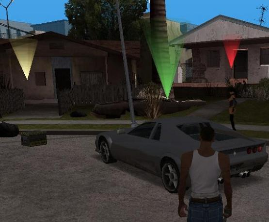
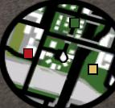

Los resaltadores, son las tipicas flechas o conos apuntando a un objetos que se nos muestra tanto en el radar, como en el mapa:

Hay varios opcodes para crearlos, y cada uno es especial por ser dirigidos a una cosa en concreto.
Para crearlo en un Vehiculo:
0186: $marker04 = create_marker_above_car $car00
Para crearlo en un Actor:
0187: $marker05 = create_marker_above_actor $actor00
Para crearlo en un Objeto:
0188: $marker06 = create_marker_above_object $object00
Para crearlo en un Agarrable:
03DC: $marker07 = create_marker_above_pickup $myweaps00
Para crearlo en un Lugar:
0167: $marker03 = create_marker_at 425.234 242.2 2.7 color 1 flag 1
Y puedes destruirlos con:
0164: disable_marker $markerxx
Mas Informacion: